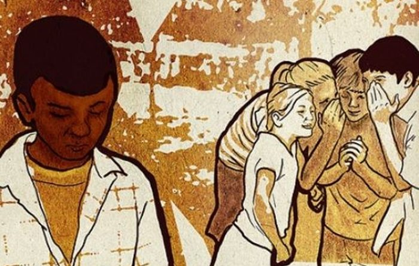

|  |
| INICIO / CONTACTO / LA DISCRIMINACION / CAUSAS / EFECTOS / TIPOS |
CAUSASAlgunas de las más comunes son el miedo, el desconocimiento, los prejuicios, la falta de información o las circunstancias socio-económicas. En muchas ocasiones, estas razones se entremezclan, incluso de forma inconsciente, y dan lugar a actitudes racistas que vulneran los derechos humanos. Se reconocen como causas o motivos de discriminación el origen racial o étnico, origen social o nacional, la religión, el género, la orientación o identidad sexual, la edad, la discapacidad, la enfermedad, la convicción u opinión, la lengua o cualquier otra condición o circunstancia personal o social. La diferencia en los sectores laborales en los que históricamente se han desempeñado los hombres. La escasa participación de las mujeres en puestos de liderazgo y de alta dirección. La falta de políticas de conciliación de la vida personal y profesional. Muy ligados al miedo están el desconocimiento y la falta de información hacia otras etnias y culturas. Conocer, dudar, contrastar información y, sobre todo, respetar la diversidad, son buenos consejos para evitar la discriminación. |
| TODOS LOS DERECHOS RESERVADOS © 2022 |